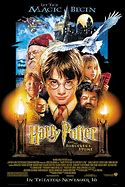
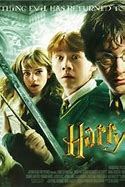
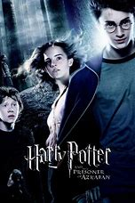
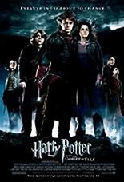
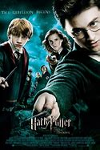
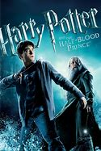
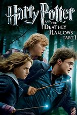
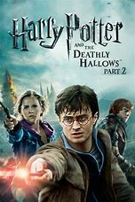

|  |
1.
Harry Potter and the Sorcerer's Stone
(2001)
2hr 32min | Mystery, Fantasy, Family
 7.6/10
 64
Official Trailer
|
This is the tale of Harry Potter (Daniel Radcliffe), an ordinary eleven-year-old boy serving as a sort of slave for his aunt and uncle who learns that he is actually a wizard and has been invited to attend the Hogwarts School for Witchcraft and Wizardry. Harry is snatched away from his mundane existence by Rubeus Hagrid (Robbie Coltrane), the groundskeeper for Hogwarts, and quickly thrown into a world completely foreign to both him and the viewer. Famous for an incident that happened at his birth, Harry makes friends easily at his new school. He soon finds, however, that the wizarding world is far more dangerous for him than he would have imagined, and he quickly learns that not all wizards are ones to be trusted. |
Chris Columbus
|
Daniel Radcliffe
Emma Watson
Rupert Grint
Robbie Coltrane
Warwick Davis
Tom Felton
Bonnie Wright
Maggie Smith
Alan Rickman
Imelda Staunton
Harry Melling
Ralph Fiennes
Brendan Gleeson
Jason Isaacs
Fiona Shaw
Timothy Spall
( Richard Harris / Michael Gambon )
|
|  |
2.
Harry Potter and the Chamber of Secrets
(2002)
2hr 41min | Mystery, Fantasy, Family
7.4/10
63
Official Trailer
|
Forced to spend his summer holidays with his muggle relations, Harry Potter (Daniel Radcliffe) gets a real shock when he gets a surprise visitor: Dobby (Toby Jones) the house-elf, who warns Harry against returning to Hogwarts, for terrible things are going to happen. Harry decides to ignore Dobby's warning and continues with his pre-arranged schedule. But at Hogwarts, strange and terrible things are indeed happening. Harry is suddenly hearing mysterious voices from inside the walls, muggle-born students are being attacked, and a message scrawled on the wall in blood puts everyone on his or her guard, "The Chamber Of Secrets Has Been Opened. Enemies Of The Heir, Beware". |
|  |
3.
Harry Potter and the Prisoner of Azkaban
(2004)
2hr 22min | Mystery, Fantasy, Family
7.9/10
82
Official Trailer
|
In the summer before his third year at Hogwarts, Harry Potter (Daniel Radcliffe) becomes fed up with his horrible aunt and uncle, and after accidentally inflating his visiting Aunt Marge (Pam Ferris), he runs away. Unfortunately, there's much more danger in the wizarding world than Harry thought. Convicted murderer Sirius Black (Gary Oldman) has escaped from the wizarding prison Azkaban. Black is known as Lord Voldemort's most devoted follower, and he's after Harry to avenge Voldemort and finish the job. But not everything is what it seems, and inside of Hogwarts there may just be a traitor. |
Alfonso Cuarón
|
|  |
4.
Harry Potter and the Goblet of Fire
(2005)
2hr 37min | Mystery, Fantasy, Family
7.7/10
81
Official Trailer
|
Harry Potter (Daniel Radcliffe) returns to Hogwarts for his fourth year, where the Triwizard Tournament is soon due to begin. Students must be over seventeen to enter, with the winner receiving eternal glory. Harry can't enter it this year, or can he. When his name is read out from the Goblet of Fire, everyone assumes that Harry has cheated. Harry insists that he never placed his name in there, with someone else behind it. But who? Harry must now survive through dragons, sea creatures and a terrifying maze, all before coming face-to-face with a particular dark wizard. |
Mike Newell
|
|  |
5.
Harry Potter and the Order of the Phoenix
(2007)
2hr 18min | Mystery, Fantasy, Family
7.5/10
71
Official Trailer
|
After a lonely summer on Privet Drive, Harry (Daniel Radcliffe) returns to a Hogwarts full of ill-fortune. Few of students and parents believe him or Dumbledore (Sir Michael Gambon) that Voldemort (Ralph Fiennes) is really back. The ministry had decided to step in by appointing a new Defense Against the Dark Arts teacher, Professor Dolores Umbridge (Imelda Staunton), who proves to be the nastiest person Harry has ever encountered. Harry also can't help stealing glances with the beautiful Cho Chang (Katie Leung). To top it off are dreams that Harry can't explain, and a mystery behind something for which Voldemort is searching. With these many things, Harry begins one of his toughest years at Hogwarts School of Witchcraft and Wizardry. |
David Yates
|
|  |
6.
Harry Potter and the Half-Blood Prince
(2009)
2hr 33min | Mystery, Fantasy, Family
7.6/10
78
Official Trailer
|
In Harry Potter's (Daniel Radcliffe's) sixth year at Hogwarts School of Witchcraft, he finds a book marked mysteriously, "This book is the property of the Half Blood Prince", which helps him excel at Potions class and teaches him a few dark and dangerous ones along the way. Meanwhile, Harry is taking private lessons with Dumbledore (Sir Michael Gambon) in order to find out about Voldemort's (Ralph Fiennes') past so they can find out what might be his only weakness. |
|  |
7.
Harry Potter and the Deathly Hallows: Part 1
(2010)
2hr 26min | Mystery, Fantasy, Family
7.7/10
65
Official Trailer
|
Voldemort's (Ralph Fiennes') power is growing stronger. He now has control over the Ministry of Magic and Hogwarts. Harry (Daniel Radcliffe), Ron (Rupert Grint), and Hermione (Emma Watson) decide to finish Dumbledore's (Sir Michael Gambon's) work and find the rest of the Horcruxes to defeat the Dark Lord. But little hope remains for the trio, and the rest of the Wizarding World, so everything they do must go as planned. |
|  |
8.
Harry Potter and the Deathly Hallows, Part 2
(2011)
2hr 10min | Mystery, Fantasy, Family
8.1/10
85
Official Trailer
|
Harry (Daniel Radcliffe), Ron (Rupert Grint), and Hermione (Emma Watson) continue to find the rest of Voldemort's (Ralph Fiennes') Horcruxes, until Harry discovers that one is at Hogwarts, they flee there as soon as possible, but Voldemort instantly finds out about their mission. The battle is drawn at Hogwarts as many people fight to protect Harry. Harry then realizes that people are dying constantly for his mistakes and then eventually fights Voldemort for the last time. Along the way, crucial secrets are unravelled, and the mysterious, but legendary, Deathly Hallows reappear. |